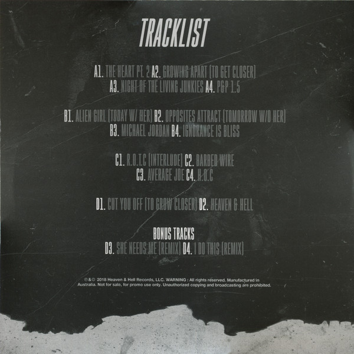
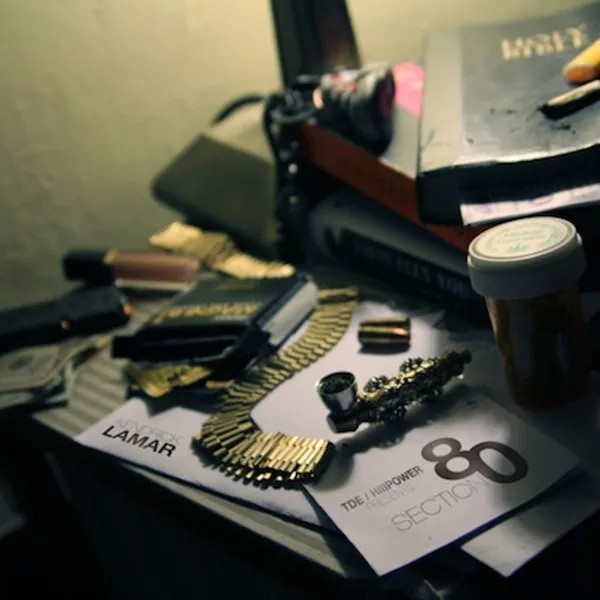

Quem é Kendrick Lamar?
Lamar é um rapper e compositor americano, nascido em 1987 na Califórnia. visto como um dos maiores rappers de todos os tempos e sempre aclamado por suas grandes obras como DAMN. e Mr Morale and The Big Steppers. Após o lançamento da mixtape Overly Dedicated em 2010 ele começou a ganhar reconhecimento. Logo no ano seguinte, Kendrick lança seu primeiro álbum independente: section.80 .
Overly Dedicated
Overly Dedicated é a quarta mixtape solo do rapper americano Kendrick Lamar, lançada em 14 de setembro de 2010, via Top Dawg Entertainment. O álbum conta com participações especiais de Dash Snow, Jhené Aiko, Schoolboy Q, Ab-Soul, Ash Riser, Dom Kennedy e Murs, entre outros.One of hip hop's most prominent current figures, Kendrick Lamar released this very good project. At the time, Kendrick really hadn't fully discovered his style, so he doesn't sound as energetic as he would later. Regardless of that, Kendrick Lamar made himself known as an interesting character. One with dope lyrics, and a unique delivery that distinguishes him from anyone else in hip hop. There are a few fantastic songs, such as "The Heart Pt. 2", which was evident that Kendrick had took a lot of time in writing this song. His emotion here makes this the best song easily. The beats on this album are pretty abstract, and they have a unique sound to them.
section.80
Kendrick Lamar is a weird kid, and rap music could always use more weird kids. The 24-year-old is a Compton native with a budding and mysterious Dr. Dre connection, but there's little-to-no link to his hometown's gangsta-funk legacy in his music. Instead, Lamar is very much a product of the late blog-rap era-- an introverted loner type who's willing to talk tough but is more interested in taking a Mag-Lite to his own personal failings and what he sees as the flaws of his generation. His rap style is fluid and melodic but approachable, and his frantic tumble of syllables evokes the feeling when you're high enough that your thoughts arrive fast and interrupt each other. If one of the Bone Thugs guys had a dorky, overly sincere younger cousin who was really into Afrobeat and Terrence Malick movies, it'd be Kendrick.
